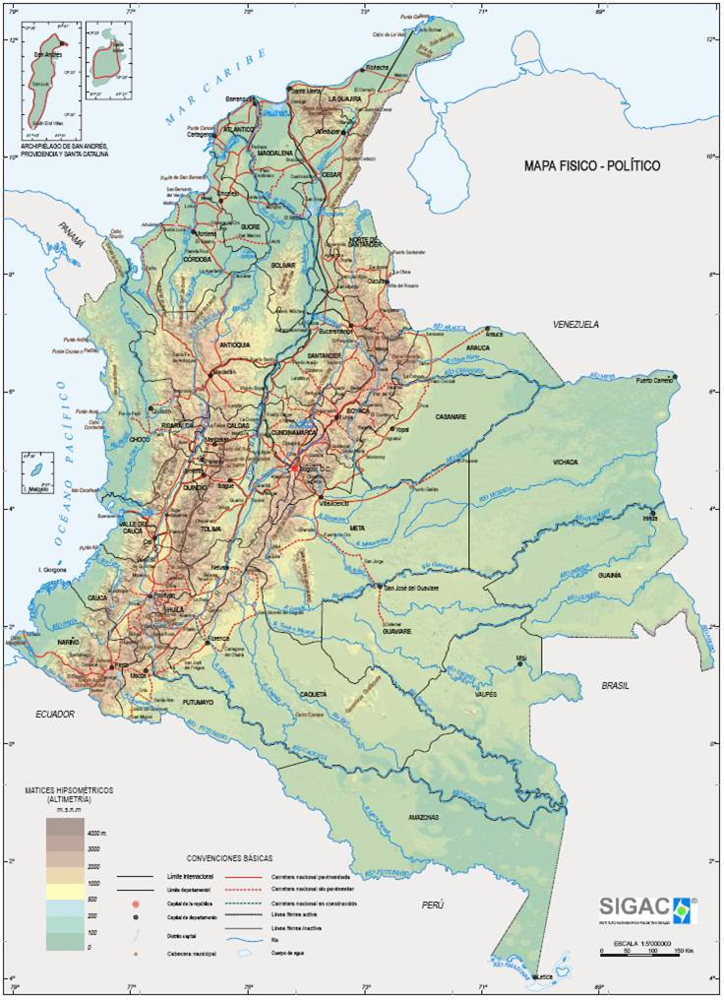
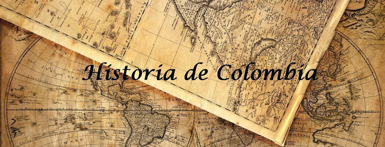
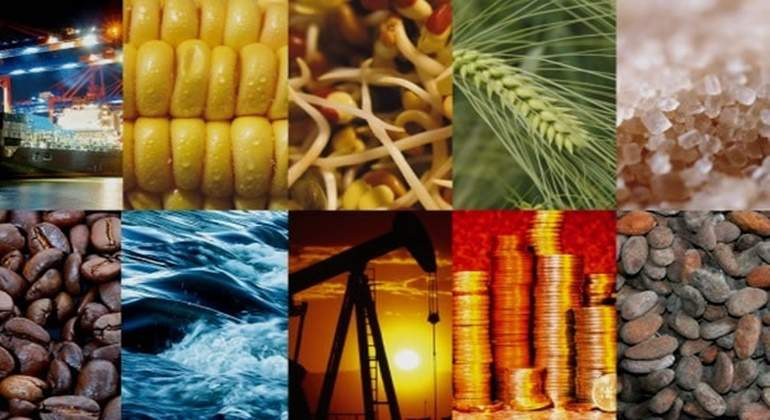

Geografía de Colombia

El país tiene soberanía en el Mar Caribe, el Océano Pacífico, la Selva amazónica, la cuenca del Orinoco y los Andes. Según la Constitución de 1991, Colombia está dividida en 32 departamentos y un único distrito capital (Bogotá).
La República de Colombia se encuentra al extremo norte de Suramérica, ubicada entre la gran selva amazónica, Panamá y los océanos Pacífico y Atlántico (de los cuales recibe fuertes influencias climáticas), siendo además cruzada por la gran cordillera andina, lo que origina una gran variedad de climas y ecosistemas, muchos de ellos propios del país. Su posición privilegiada no solamente proviene por ser el único país de América del Sur que posee dos costas: en el mar Caribe y en el océano Pacífico ( y por tanto una extensa plataforma continental), si no además que se encuentra en la parte media del continente americano, lo que facilita su comunicación con todos los continentes.
Colombia posee 59 áreas protegidas bajo el amparo del «Sistema Nacional de Áreas Protegidas» (SINAP) que tiene como elemento más destacado a nivel nacional el «Sistema de Parques Nacionales Naturales» (SPNN). Estas áreas abarcan una extensión de más de 12.602.320,7 hectáreas (126.023,21 kilómetros cuadrados) y suponen más de un 11,04% del territorio continental colombiano.
Colombia ocupa el segundo lugar dentro de los países con mayor biodiversidad del mundo, superado únicamente por Brasil.
El país ocupa la primera posición en el mundo en número de especies de orquídeas y aves, la segunda posición en plantas, anfibios, mariposas y peces de agua dulce, tercer lugar en especies de palmeras y reptiles y el cuarto lugar en la biodiversidad de mamíferos.
Ubicación de Colombia
Colombia se encuentra en la latitud y la longitud de 04 ° 00 N, 72 º 00 w. Está situado en la esquina noroeste de América del Sur. Colombia cubre tanto el norte como en los hemisferios sur.La ciudad capital de Colombia es Bogotá. La latitud y la longitud de Bogotá, la ciudad capital de Colombia es la 04º 38′ N, 74°05′ w.
La superficie de Colombia es de 2.129.748 km², de los cuales 1.141.748 km² corresponden a su territorio continental y los restantes 988.000 km² a su extensión marítima, de la cual mantiene un diferendo limítrofe con Venezuela y Nicaragua.
Colombia es el vigésimo sexto país más grande del mundo y el cuarto en Sudamérica, después de Brasil, Argentina y Perú.
Limita al este con Venezuela y Brasil, al sur con Perú y Ecuador y al noroeste con Panamá; en cuanto a límites marítimos, colinda con Panamá, Costa Rica, Nicaragua, Honduras, Jamaica, Haití, República Dominicana y Venezuela en el mar Caribe, y con Panamá, Costa Rica y Ecuador en el océano Pacífico.
Recursos hidráulicos, costas y ríos
Colombia tiene dos grandes vertientes: la del Océano Pacífico, con cuencas pequeñas de ríos cortos pero caudalosos y la del Océano Atlántico, con tres grandes cuencas; la del río Amazonas, la del río Orinoco y la del mar Caribe.
Vertiente Atlántica: abarca los ríos que nacen en el sistema andino y la Sierra Nevada de Santa Marta. Generalmente éstos tienen un curso largo y son navegables en su mayor parte. Sus principales ríos son los ríos Magdalena, Cauca, Atrato, Nechí y Sinú, por parte de la cuenca caribeña; el Arauca, Guaviare, Inírida, Meta y Vichada, en la cuenca del Orinoco; y el Putumayo, Caquetá, Apaporis y Caguán, en la cuenca del Amazonas.
Vertiente Pacífica: sus ríos nacen en la cordillera Occidental, por lo que son cortos y torrentosos, con pocas partes navegables. Los principales ríos son el Baudó, Patía y San Juan.
Colombia igualmente posee cuerpos de agua importantes, denominados lagunas y ciénagas. Mientras las lagunas colombianas se sitúan sobre los 3.000 msnm y se originan por el deshielo o deslizamientos que represan el surso de agua de algunos ríos, las ciénagas se forman en terrenos bajos y pantanosos alimentándose del flujo y las crecientes de los ríos.
El sistema montañoso de Colombia
El territorio continental de Colombia está dividido en tres grandes regiones por su relieve: las llanuras costeras ubicadas al norte y occidente del país, el centro formado por la Cordillera de los Andes y sus estribaciones, y el oriente formado por planicies.
La Cordillera de los Andes cubre una parte considerable del territorio colombiano. En Colombia, los Andes se ramifican en tres vertientes: la Cordillera Occidental, la Cordillera Central y la Cordillera Oriental. Los Andes colombianos inician en el Nudo de los Pastos. Allí se encuentra los volcanes Galeras, Cumbal y Azufral. En el Nudo de los Pastos se separan las altiplanicies de Túquerres e Ipiales
El territorio colombiano pertenece al Cinturón de Fuego del Pacífico y al cinturón volcánico de los Andes, por lo que los sistemas montañosos y algunas islas son de origen volcánico. De la misma manera los sismos demuestran la actividad tectónica del territorio. Los principales volcanos son Volcán Chiles, Volcán Galeras, la cadena volcánica de los Coconucos (la cual es una agrupación de 15 volcanes geográficamente próximos entre los que están los volcanes del Puracé, el Azufral, el Doña Juana, el Sotará y otros), Nevado del Ruiz y el Nevado del Huila.
Historia de Colombia

Colombia es un país con una historia intensa y extensa. Un territorio con unas costumbres y una cultura con varios siglos de antigüedad. Sus gentes, su gastronomía y sus paisajes son maravillosos y a todos sus visitantes deja sorprendidos. Una nación que pasado por varias etapas y períodos diferentes con el paso del tiempo dignos de conocer.
Colombia precolombina
La época precolombina se refiere al período histórico de Colombia anterior a la colonización española.
Antes de llegar los españoles, el territorio de la actual Colombia estaba ocupado por varios pueblos en diverso grado de civilización. Los muiscas, en las mesetas orientales, eran los más importantes, con un gobierno central y conocimientos de astronomía, agricultura y alfarería. Con un sistema mitológico propio y una lengua común: el chibcha
Más atrasados estaban los caribes y los taironas, que habitaban en las zonas litorales, los quimbayas, los zenues, los calima, los quechuas, los tumacos, los chocoes y los andaquíes.
Posiblemente el legado más conocido de la cultura indigena muisca que ocupaba el centro del país, es la famosa leyenda del dorado. Leyenda que nació entre los conquistadores españoles que escucharon e incluso llegaron a presenciar, el ritual que realizaban los caciques o reyes musicas en la laguna de Guatavita. En dicha ceremonia, siguiendo con su calendario astral, los muiscas esperaban el momento en el que la luna llena se reflejaba en el centro de la laguna para en dicha fecha, realizar el baño ritual de coronación del nuevo cacique, el cual iba hasta el medio de la laguna sobre una balsa, repleta de oro y de piedras preciosas que arrojaba al agua como ofrenda, estando completamente desnudo y embadurnado de polvo de oro, de pies a cabeza, simulando a Zue, el dios sol, para unirse en medio de la laguna con Chia, la luna madre, y engendrar de dicha unión al hombre que se sumergia en el agua y que renacía de la misma convertido en el hijo de ambas deidades y por tanto, el nuevo cacique.
En la actualidad el aeropuerto de la capital del país lleva el nombre de El Dorado, como homenaje al patrimonio cultural prehispanico
Epoca hispánica
La época hispánica de la historia de Colombia se extiende desde el inicio de la conquista por parte de los españoles a principios del siglo XVI hasta la definitiva independencia del país, en torno al año 1822
El conquistador Gonzalo Jiménez de Quesada colonizó una vasta área en la región siguiendo el cauce del río Magdalena en el interior de los Andes en Colombia, conquistando a la poderosa cultura Chibcha y fundando la ciudad de Santa Fe de Bogotá (c. 1538, actualmente Bogotá) para nombrar al gobierno civil en la Nueva Granada, una Real Audiencia fue creada en Santa Fe de Bogotá en 1548-1549, un cuerpo que combinaba la autoridad ejecutiva y judicial, hasta cuando un presidente o gobernador fue establecido en 1564, asumiendo poderes ejecutivos.
Los españoles inician la expedición de Colombia alrededor de 1500 fundando las primeras ciudades en 1509 en la región de Urabá y el Darién. Estos primeros asentamientos no prosperaron, siendo Santa Marta, fundada en 1525 por Rodrigo de Bastidas, la más antigua ciudad española que sobrevive en la actualidad en el continente americano. Tras la exploración de la costa caribe, comenzó la exploración del interior, encomendada por España al Gobernador Fernández de Lugo, en busca de una ruta más corta a las riquezas del Perú, la comandó el Capitán Gonzalo Jiménez de Quesada, quien se adentró remontando el Río Magdalena, cuyo plan inicial era llegar hasta su nacimiento, la expedición que ya estaba a punto de fracasar, se desvía al oír de una nación (la Muisca) con grandes riquezas, allí conocen sobre la Leyenda de El Dorado, Quesada de regreso a Santa Marta, se ve obligado a devolverse al enterarse de dos expediciones que se dirigen a su recién fundada (1538) Santa Fe de Bogotá, éstas son las de Sebastián de Belalcázar que parte de Quito y la de los exploradores alemanes dirigidos por Nicolás de Federmán proveniente de Coro (Venezuela), estos arriban en 1539. Para evitar una guerra civil viajan los tres comandantes a España, el rey-emperador, nombra a Quesada Adelantado, a Federmán lo remite a los Welser y a Belarcázar lo nombra gobernador de Popayán, sus hombres fundan Pasto y Neiva, y su segundo Jorge Robledo continua la exploración y conquista del occidente, fundando Cartago y Santafé de Antioquia, independientemente años atrás Pedro de Heredia completa la conquista de la costa al fundar Cartagena de Indias (1533).
En 1717 se creó el virreinato de Nueva Granada, con capital en Bogotá, establecido definitivamente en 1740. Comprendía, además de la actual Colombia. Panamá, Ecuador y Venezuela. Durante el período virreinal se tuvo que hacer frente a ataques ingleses, holandeses y franceses, y ocurrieron también los primeros intentos de sublevación. El Virreinato de Nueva Granada ontinuó hasta la pérdida del poder español sobre los territorios en los años 1810.
Independencia y Republica
La Independencia de Colombia fue el proceso histórico que permitió la emancipación de Colombia del Imperio español, dando fin al período colonial. Dicho proceso se libró en medio de un conflicto desarrollado durante el primer cuarto del siglo XIX para emancipar el territorio entonces era conocida como Provincias Unidas de la Nueva Granada. Esta fue parte de las guerras de independencia hispanoamericanas, una serie de luchas surgidas en América Latina motivadas por la invasión francesa de España en 1808, la cual fue parte de las guerras napoleónicas en Europa.
Los movimientos de la independencia comienzan con una serie de hechos liderados por Antonio Nariño y Camilo Torres Tenorio. La primera fase de la guerra, de 1810 a 1819, se caracterizó por constantes luchas internas entre los defensores de la independencia. En 1811 las provincias de la Nueva Granada se conformaron en un nuevo Estado independiente, consistente en una confederación débil de aquellas provincias que se habían declarado independientes en 1810. En 1816 los españoles ganaron de nuevo el control del país, con lo cual instala el llamado régimen del terror. Aunque durante este período varios grupos republicanos se mantuvieron activos, ejerciendo un poder efectivo en los Llanos, principalmente en la Guayana venezolana y en el Casanare.
En 1819 un ejército republicano comandado por Simón Bolívar cruza las montañas que separan las provincias de Casanare y Tunja y tras las batallas de Paya, Pantano de Vargas y Puente de Boyacá tiene vía libre para tomar el control de Santa Fe, ciudad a la que llega el 10 de agosto de 1819. El territorio ocupado por el virreinato de Nueva Granada se convirtió en una República Federal, luego conocida como la Gran Colombia en honor al navegante Cristóbal Colón.
Colombia moderna y actual
La victoria en la batalla Boyacá permitió a los patriotas celebrar un congreso en Angostura (1819), que proclamó la unión de Nueva Granada y Venezuela en la República de la Gran Colombia, luego agrandada con las incorporaciones de Panamá (1821), Ecuador (1822), y de la cual Bolívar fue nombrado primer presidente (1821).
A mediados del siglo XIX las distintas guerras internas separatistas termianron por disolver la unión de la Gran Colombia en los estados actuales, salvo Panamá, páis que se independizó de Colombia en el año 1.914, tras un movimiento secesionista apoyado por los Estados Unidos, potencia interesada en establecer su influencia en la zona del istmo con la construcción del nuevo canal interoceanico.
Entre finales del siglo XIX e inicios del XX, Colombia mantuvo toda una serie de episodios de alternancia política entre gobiernos liberales y conservadores, con algunos episodios de enfrentamientos entre ambos bandos.
Uno de sus episodios más emblematicos sucedió en el año 1948 mientras se estaba celebrando la IX Conferencia Panamericana de Bogotá, cuando fue asesinado el lider político Jorge Eliecer Gaitán lo que provocó una revuelta popular que. al irse extendiendo por el país, condujo a un estado general de anarquía, y fue reprimida duramente por las fuerzas del orden. Este acontecimiento pasó a la terminología política con el nombre de bogotazo.
En las elecciones de 1950, celebradas en difíciles condiciones de estabilidad, triunfó el conservador Laureano Gómez, sin que el partido liberal interviniese en las mismas. Gómez instituyó un régimen dictatorial que reprimió con dureza a la oposición, originando una guerra civil. Muchos liberales, para huir de la represión, se vieron obligados a marchar a las montañas, donde constituyeron bandas armadas.
En la actualidad y tras 50 años de enfrentamiento con alguna bandas armadas que mantuvieron sus lucha, y que en los años 80's y 90's se ampararon en el apoyo del narcotrafico, Colombia ha entrado finalmente en un periodo de paz y consilicación con los dialogos de paz y los acuerdos alcanzados recientemente de los cuales se espera el inicio de una nueva etapa de estabilidad en el país.
Economía de Colombia

La economía de Colombia es de ingresos medio-altos. Se destaca en el ámbito internacional por el importante crecimiento que ha experimentado en la última década en la exportación de mercancía y por el atractivo que ofrece a la inversión extranjera. Es la cuarta economía más grande de Latinoamérica, tras las de Brasil, México y Argentina. En la clasificación internacional, se encuentra dentro de las 30 mayores del mundo.
Hasta los años 1950 e incluso hasta la década anterior, el principal medio de Colombia para obtener divisas se centró principalmente en las ventas externas de café. Sin embargo, existen varios sectores que hicieron que Colombia fuera uno de los países más reconocidos por su producción, como son las esmeraldas y la floricultura. También se destacan los sectores de la industria automotriz, textiles y es un gran exportador de oro, zafiros y diamantes, entre otros productos.
El famoso café colombiano
A nivel mundial, Colombia es el primer país productor de café y el mayor productor de café suave en el mundo.Los principales países importadores del café de Colombia son Estados Unidos, Alemania, Japón, Países Bajos y Suecia.
Durante el siglo XX el café fue el producto primordial dentro de las actividades comerciales colombianas, registrando exportaciones de hasta 2.560 sacos. Desde los años veinte, Colombia ocupó el primer lugar como productor mundial de café suave.
Los principales departamentos productores de café en Colombia son: Nariño, Norte de Santander, Antioquia, Valle del Cauca, Cundinamarca, Huila, Cauca, Tolima, Caldas, Quindío y Risaralda, conocidos los tres últimos como el Eje Cafetero.
Juan Valdez es símbolo e imagen del logotipo del Café de Colombia. La filosofía, el tesón y el trabajo duro de los productores colombianos de café están simbolizados por Juan Valdez y es compartida por millones de personas en todo el mundo. Alrededor de este concepto la Federación Nacional de Cafeteros de Colombia desarrolló el programa 100% colombiano y una activa campaña de diferenciación y publicidad.
Minería, esmeraldas y carbón por excelencia
Colombia es un país de gran riqueza en recursos mineros por la enormes extensiones de sus cordilleras. Entre muchos otros recursos mineros del país como son el niquel y el oro, del país destacan las esmeraldas colombianas, valoradas en la alta joytería como las más hermosas del mundo, y con una participación en el mercado mundial del 55%.
Igualmente el carbón es otra materia prima de gran exportación y de amplia importancia en la economiá del país ya que Colombia exporta el 10 % del comercio mundial de este recurso.
Flores colombianas
Colombia es el segundo páis exportador de flores en el mundo. Solo superado por Holanda.
De acuerdo con las cifras de ProColombia, el país es uno de los principales jugadores en las exportaciones de flores, ya que cuenta con una participación de 14,1% en el mercado internacional. El país con la mayor participación es Holanda con 48%, luego sigue Colombia; en tercer lugar Ecuador con 8% y Kenia con 7%, aproximadamente.
El paraiso de las frutas tropicales
Colombia es el tercer país latinoamericano con mayores hectareas cultivadas de frutas
Según la Organización de las Naciones Unidas para la Alimentación y la Agricultura (FAO), Colombia es el tercer país latinoamericano con mayor número de hectáreas cultivadas en frutales. Característica que definen a Colombia como una de las ‘despensas más grandes del mundo’. Oportunidad que los empresarios del sector hortifrutícola han venido aprovechando para dar a conocer el poder de las frutas exóticas en Europa y Estados Unidos.
Colombia es actualmente el decimoprimer exportador de fruta fresca para el mundo y sigue escalando. De hecho, tan sólo al Reino Unido donde el mercado de las frutas tropicales ha crecido un 1.1% en los últimos años, Colombia le exporta más de 100.000 kilos de mango anuales y otras frutas como tamarindo, pitahaya y granadilla. Naturalmente, el clima de Colombia le permite menores tiempos de tránsito para el cultivo y en consecuencia, mayor velocidad en las entregas y fletes competitivos internacionalmente, que le dan una ventaja inigualable sobre otros productores.